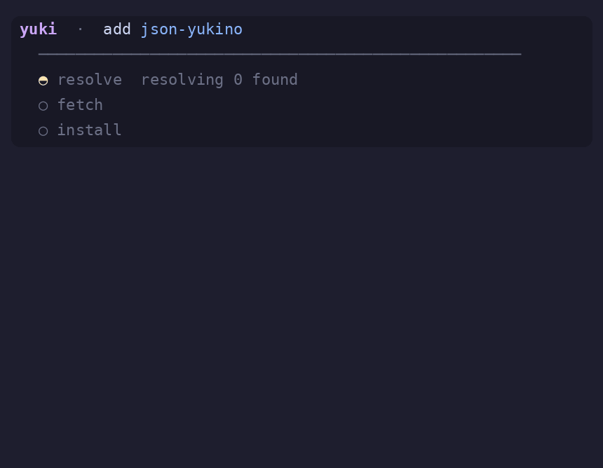
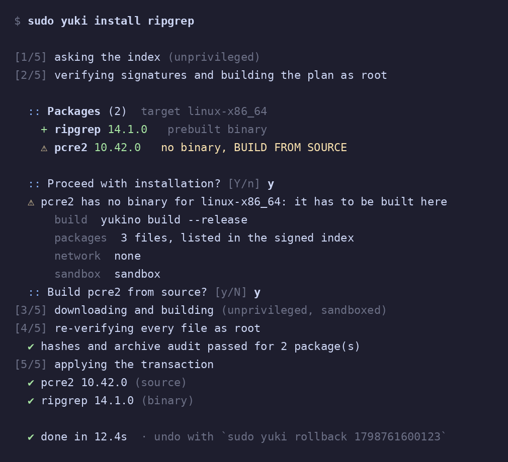
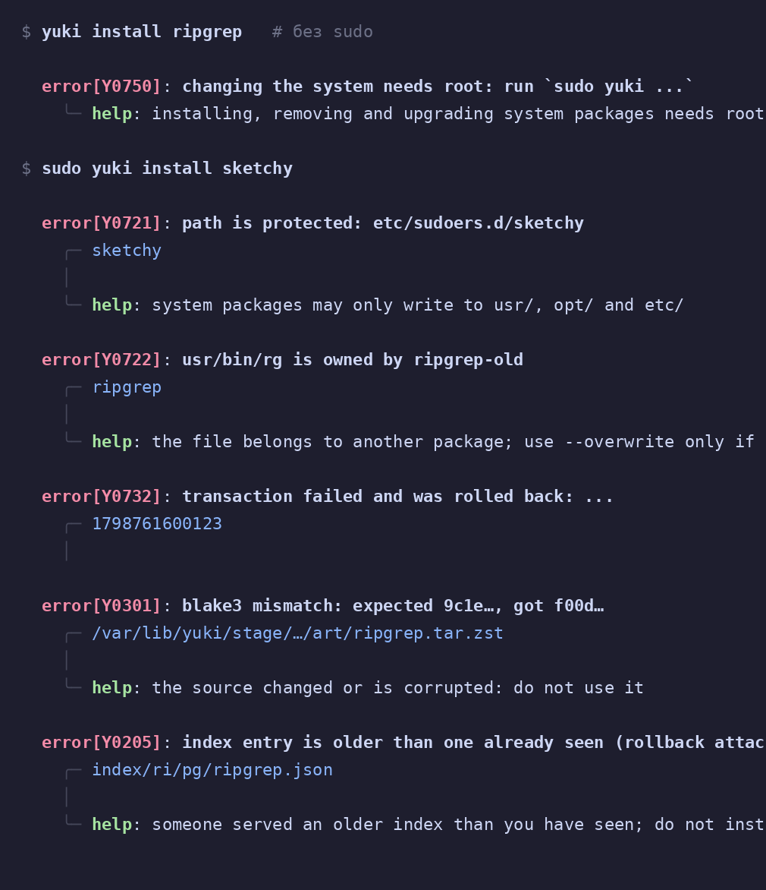
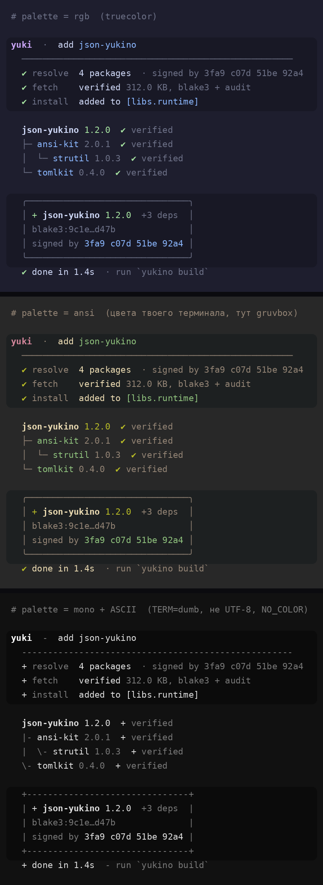
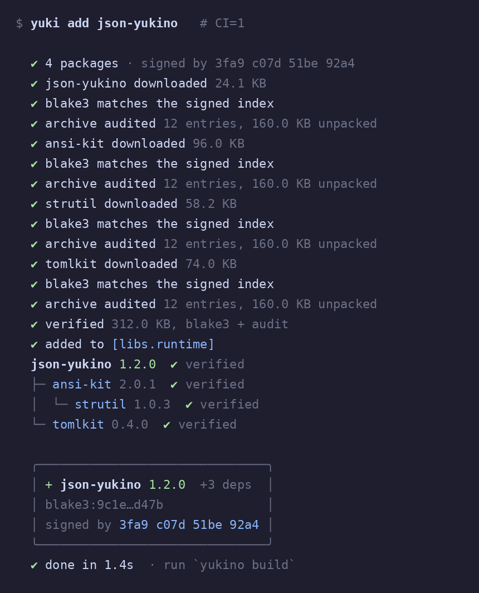
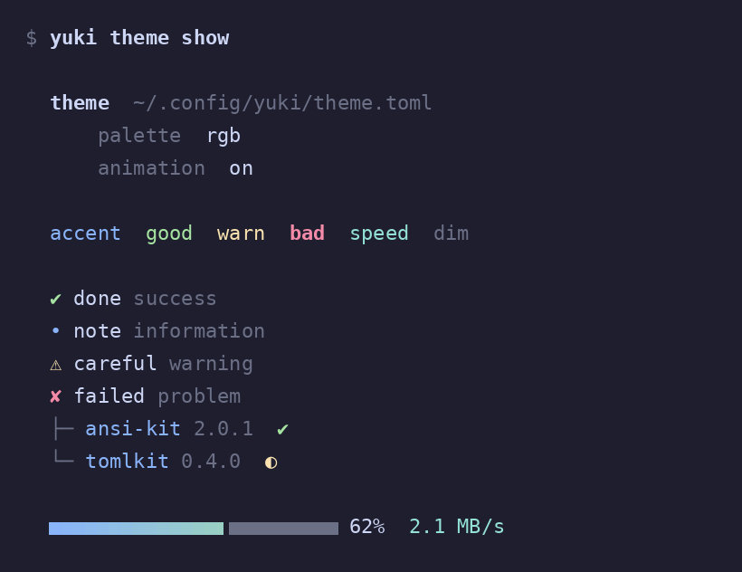

yuki
Менеджер пакетов для Yukino. Без серверов, с подписями и откатом.The package manager for Yukino. No servers, with signatures and rollback.
Что внутриWhat is inside
Реестр это обычный git-репозиторий: файлы раздаёт GitHub, а доверие строится на подписях и хешах.The registry is a plain git repository: GitHub serves files, trust comes from signatures and hashes.
Подписанный индексSigned index
Ed25519 по записи, BLAKE3 по архиву, срок действия и защита от отката. Опубликованную версию нельзя тихо подменить.Ed25519 over each entry, BLAKE3 over each archive, expiry and rollback protection. A published version cannot be swapped silently.
Без root до концаNo root until the end
Сеть и сборка идут от nobody, root всё проверяет заново.Network and builds run as nobody; root re-verifies everything.
ТранзакцииTransactions
Журнал, блокировка и откат одной командой.Journal, lock and one-command rollback.
Нет бинарника? СоберёмNo binary? We build
Сборка из исходников в песочнице и только с вашего согласия.Sandboxed source build, only with your consent.
Связи пакетовPackage relations
why, tree, rdeps, related, graph и orphans.why, tree, rdeps, related, graph and orphans.
Красиво и настраиваемоBeautiful and configurable
Живая панель с растущим деревом зависимостей, одна тема в theme.toml, подсказки к каждой ошибке и ASCII-режим для любого терминала.A live panel with a growing dependency tree, one theme in theme.toml, a hint for every error and an ASCII mode for any terminal.
Быстрый стартQuick start
Исходники ещё не собирались на реальной машине: первая сборка покажет ошибки, их нужно поправить.The sources have not been compiled on a real machine yet: the first build will show errors to fix.
# build yuki cd yuki && yukino build --release sudo install -m 755 target/release/yuki /usr/local/bin/yuki # point it at an index and trust its key sudo mkdir -p /etc/yuki echo https://raw.githubusercontent.com/YOU/yuki-index/main | sudo tee /etc/yuki/index_url sudo yuki keys trust main <public-key> yuki doctor
yuki -Ss grep # search yuki -Si ripgrep # description sudo yuki -S ripgrep # install sudo yuki -Syu # upgrade everything sudo yuki -Rs ripgrep # remove with unneeded deps yuki related ripgrep # what is connected sudo yuki rollback # undo the last transaction
yuki keys gen main
yuki pack hello ./pkgroot hello-1.0.0-linux-x86_64.tar.zst
yuki index add hello.release.json main
yuki index catalog main
git add index catalog.json* && git commit -S -m "hello 1.0.0" # then open a PRПолный туториал: репозиторий, CI, ключи, ротацияFull tutorial: repository, CI, keys, rotation
КомандыCommands
yuki help <команда> даёт примеры, yuki explain Y0301 объясняет любую ошибку, при опечатке подскажет правильную команду.yuki help <command> shows examples, yuki explain Y0301 explains any error, a typo gets a suggestion.
Система (sudo)System (sudo)
install | reinstallбинарник или сборка из исходниковbinary or source builduninstall [-s]удаление, -s убирает ненужные зависимостиremove; -s drops unneeded depsupgrade | self-updateтаблица «старая → новая», один вопросold → new table, one promptautoremoveубрать осиротевшие зависимостиremove orphaned dependencieshold | unholdзафиксировать версиюpin a versionrollback | historyоткат и журналundo and log
ПосмотретьLook around
search | showпоиск и описание пакетаfind a package, read its descriptionlist | info | files | ownsчто установлено и чьё этоwhat is installed and who owns itwhy | tree | rdeps | relatedкак пакеты связаныhow packages connectgraph [dot]весь граф, Graphviz по запросуthe whole graph, Graphviz on requestoutdated | orphansчто обновить, что лишнееwhat to upgrade, what is unneededcheck | sys-auditфайлы против базы, снятые версииfiles vs database, withdrawn versions
Проекты и сервисProjects and tools
add | remove | updateбиблиотеки в yuki.tomllibraries in yuki.tomlfetch | auditперепроверить и сверить с индексомre-verify and compare with the indexkeysgen · trust · untrust · list · export · sign · refreshexport | importперенос списка пакетовmove a package listdoctor | config | cleanдиагностика, настройки, кэшdiagnose, settings, cachetheme | completionsвид и дополнение в оболочкеlook and shell completion
Флаги как в pacmanpacman-style flags
| flag | значитmeans | flag | значитmeans |
|---|---|---|---|
-S pkg | install | -Q | list |
-Syu | upgrade | -Qi pkg | info |
-Ss word | search | -Ql pkg | files |
-Si pkg | show | -Qo path | owns |
-R pkg | uninstall | -Qe | -Qd | explicit | deps |
-Rs pkg | с ненужными зависимостямиwith unneeded deps | -Qdt | orphans |
-Sc | -Scc | clean | -Qu | -Qk | outdated | check |
Как проходит установкаHow an install goes
Root появляется только там, где нужно менять систему, и ничему не верит на слово.Root appears only where the system changes, and trusts nothing it is handed.
- Ребёнок приносит записи индексаThe child fetches index entriesfork, отказ от root, no_new_privsfork, drop root, no_new_privsnobody
- Root заново проверяет и строит планRoot re-verifies and builds the planподпись, срок, откат, выбор версии, вопрос «продолжить?»signature, expiry, rollback, version choice, a confirmation promptroot
- Скачивание или сборка в песочницеDownload or sandboxed buildbubblewrap, без сети, лимит 30 минутbubblewrap, no network, 30 minute limitnobody
- Root копирует к себе и проверяет файлыRoot copies and re-checks the filesBLAKE3, аудит архива, политика путей, процессы nobody убитыBLAKE3, archive audit, path policy, nobody's processes killedroot
- Транзакция с журналомA journaled transactionатомарная замена файлов, откат при ошибкеatomic file replacement, rollback on errorroot
От чего защищаемсяWhat it defends against
| УгрозаThreat | ЗащитаDefense |
|---|---|
| Подмена архива или индексаSwapped archive or index | BLAKE3 + Ed25519 + повторная проверка в rootre-check in root |
| Откат и «замороженный» индексRollback and frozen index | seq + expires + seen |
| Вредный архивMalicious archive | аудит до распаковки, политика путей, лимитыaudit before unpacking, path policy, limits |
| Компрометация сети или сборкиCompromised network or build | разделение привилегий, песочницаprivilege separation, sandbox |
| Сбой посреди установкиFailure mid-install | журнал, блокировка, откатjournal, lock, rollback |
| Утёкший ключA leaked key | порог подписей, ротация и отзывsignature threshold, rotation and revocation |
Что не защищено, написано честно в DESIGN.md: например, компрометация порога ключей или уязвимость в bubblewrap.What is not protected is stated honestly in DESIGN.md: for example, a compromise of the signing threshold or a bubblewrap escape.
Как это выглядитWhat it looks like
Картинки сделаны по логике кода, а не снимки реального запуска. Названия пакетов и цифры выдуманы.The images follow the code's logic and are not screenshots of a real run. Package names and numbers are made up.






Одна тема, любые терминалыOne theme, any terminal
# ~/.config/yuki/theme.toml (or /etc/yuki/theme.toml) palette = "ansi" # "rgb" | "ansi" (your terminal's colors) | "mono" [colors] accent = "ansi:cyan" bad = "#f38ba8+bold" [style] animation = true bar_gradient = true [symbols] spinner = "◐ ◓ ◑ ◒"
Цвет, символы и анимация подстраиваются сами: truecolor → 256 → 16 → без цвета, UTF-8 → ASCII, живой терминал → простой лог. NO_COLOR=1 работает.Colors, symbols and animation adapt themselves: truecolor → 256 → 16 → none, UTF-8 → ASCII, live terminal → plain log. NO_COLOR=1 is honored.
FAQ
Нужны ли мне свои серверы?Do I need my own servers?
Нет. Индекс лежит в git-репозитории, клиент берёт файлы по HTTPS и проверяет подписи сам.No. The index is a git repository; the client fetches files over HTTPS and verifies signatures itself.
Почему только через sudo?Why only through sudo?
Установка меняет систему, поэтому нужны права. Но сеть и сборка выполняются без них, а root проверяет всё заново и применяет транзакцию.Installing changes the system, so it needs rights. But network and builds run without them, and root re-verifies everything before applying a transaction.
Что если нет готового бинарника?What if there is no prebuilt binary?
yuki покажет команду сборки, список файлов и режим песочницы и спросит согласие. В скриптах нужен флаг --allow-build.yuki shows the build command, the file list and the sandbox mode, then asks. Scripts need --allow-build.
Как обновляется сам yuki?How does yuki update itself?
sudo yuki self-update. Новый бинарник обязан запуститься, иначе обновление откатывается.sudo yuki self-update. The new binary must start, otherwise the update is rolled back.
Утёк ключ, что делать?A key leaked, what now?
Подписать rotation.json с отзывом достаточным числом ключей и выполнить sudo yuki keys refresh. Отозванный ключ больше не вернётся.Sign a rotation.json with a revoke entry using enough keys and run sudo yuki keys refresh. A revoked key never comes back.
Это уже работает?Does it work yet?
Исходники написаны по документации Yukino, но ни разу не компилировались на реальной машине. Ожидайте ошибок при первой сборке.The sources follow the Yukino docs but have never been compiled on a real machine. Expect errors on the first build.